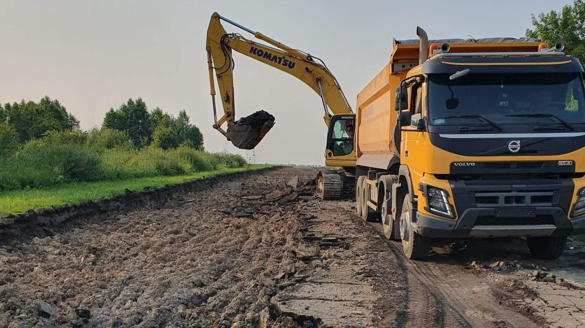
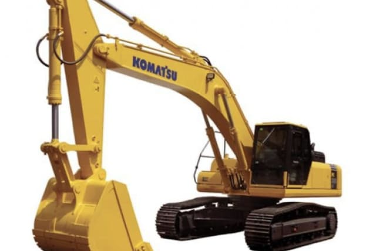
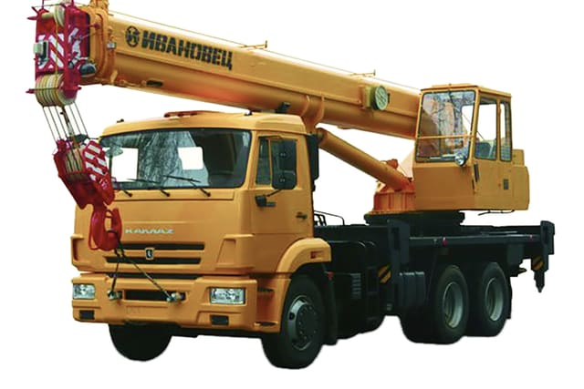
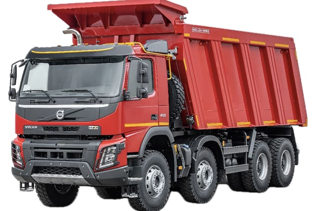
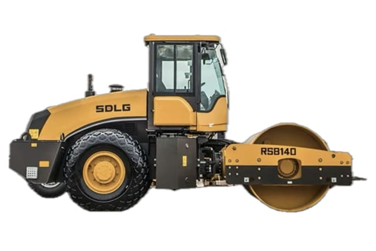
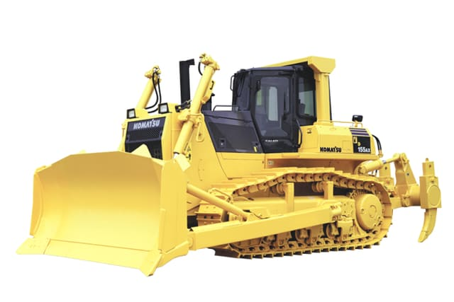
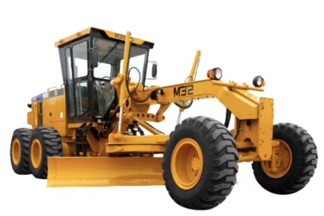
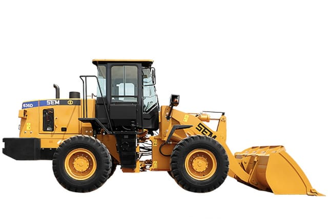
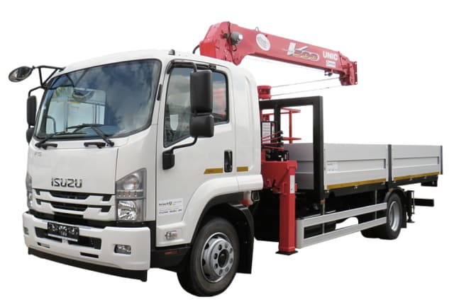
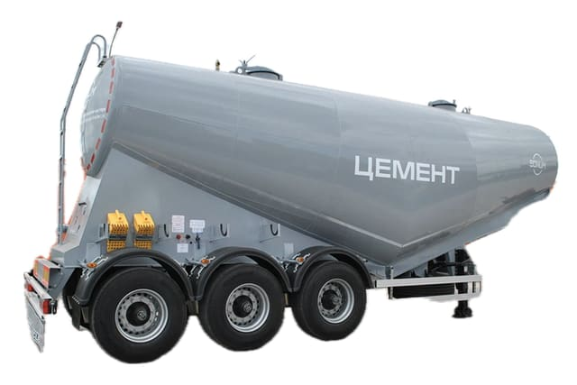

Собственный паркна семьдесят восемь единиц
Земля, подъём, дорога, перевозка. Работаем сменой, вахтой и подрядом под объект — без субподряда на технику.
- 78единиц техники
- 9типов машин
- 150проектов
Что можно взятьв работу

Экскаваторы
Пять гусеничных машин тяжёлого класса: разработка котлована, траншеи, вскрыша, погрузка в самосвал.
5 машин в парке
Автокраны и самоходные краны
Десять машин: от автокрана на шасси КАМАЗ до гусеничного крана тяжёлого класса.
10 машин в парке
Самосвалы
Шесть машин 6×4 и 8×4 плюс полуприцеп-самосвал.
6 машин в парке
Катки
Грунтовый каток для земляного полотна и оснований, вибрационный дорожный — для асфальтобетона.
2 машины в парке
Бульдозер
Тяжёлый гусеничный бульдозер Komatsu D155A-5.
1 машина в парке
Автогрейдер
Автогрейдер SEM 919.
1 машина в парке
Погрузчики
Фронтальный погрузчик для инертных и складской работы, вилочный — для поддонов и штучного груза.
2 машины в парке
Манипулятор
Манипулятор Isuzu Forward: привозит груз и сам его разгружает.
1 машина в парке
Тралы и перевозка
Трейлеры и полуприцепы под перевозку техники, цементовоз под цемент, фургон под мелкий груз.
6 машин в паркеСостав паркапо группам работ
Земляные работы
Разработка грунта, планировка, погрузка в самосвал.
| Машина | Марка и модель | Назначение |
|---|---|---|
| Экскаватор гусеничный | Komatsu PC300-7 | Разработка котлована, погрузка |
| Экскаватор гусеничный | Komatsu PC300-8MO | Разработка котлована, погрузка |
| Экскаватор гусеничный | Komatsu RS-210 | Траншеи, планировка |
| Экскаватор гусеничный | Hitachi ZX330LC-5G | Тяжёлый грунт, вскрыша |
| Экскаватор гусеничный | LGCE E6255F | Универсальная разработка |
| Бульдозер гусеничный | Komatsu D155A-5 | Планировка, перемещение грунта |
| Погрузчик фронтальный | SEM SEM636D | Погрузка инертных, склад |
Дорожные работы
Профиль, уплотнение основания и покрытия.
| Машина | Марка и модель | Назначение |
|---|---|---|
| Автогрейдер | SEM 919 | Профилирование основания |
| Каток грунтовый | LGCE RS814OH | Уплотнение земляного полотна |
| Каток дорожный вибрационный | колёсный обозначение в каталоге обрезано | Уплотнение асфальтобетона |
Подъёмные работы
От автокрана на шасси до гусеничного крана тяжёлого класса.
| Машина | Марка и модель | Назначение |
|---|---|---|
| Автокран | КС-45717К-1 на шасси КАМАЗ | Монтаж на стеснённой площадке |
| Кран самоходный | KATO KR-35HV | Монтаж конструкций |
| Кран самоходный | Tadano TR255 | Монтаж конструкций |
| Кран самоходный | Tadano TR500M-3 | Монтаж конструкций |
| Автокран | Tadano TR352 | Монтаж конструкций |
| Специальный автокран | Liebherr LTM 1090-4 | Тяжёлый монтаж, большой вылет |
| Специальный автокран | Zoomlion ZLJ5322JQZ | Тяжёлый монтаж |
| Кран гусеничный | Zoomlion ZCC2000 | Длительный монтаж на объекте |
| Кран стреловой самоходный | Zoomlion ZCC85 обозначение в каталоге обрезано | Монтаж конструкций |
| Кран стреловой самоходный | Zoomlion ZCC60 обозначение в каталоге обрезано | Монтаж конструкций |
| Манипулятор | Isuzu Forward | Разгрузка поддонов на объекте |
| Погрузчик вилочный | Heli CPCD30 | Складские работы, поддоны |
Перевозка
Самосвалы под инертные и тралы под технику.
| Машина | Марка и модель | Назначение |
|---|---|---|
| Самосвал | Volvo FM Truck 8×4 | Инертные, грунт |
| Самосвал | Volvo FH Truck 6×4 | Инертные, грунт |
| Самосвал | MAN TGS 33.480 6×4 | Инертные, грунт |
| Самосвал | HOWO T5G 8×4 | Инертные, грунт |
| Самосвал | FAW J6 8×4 | Инертные, грунт |
| Полуприцеп-самосвал | Kässbohrer DL | Большой объём инертных |
| Полуприцеп-цистерна | цементовоз CIMC | Перевозка цемента |
| Трейлер-прицеп | Luyoe LHX9400TDP | Перевозка техники |
| Полуприцеп | Zhongji ZJV9400GSNDY | Перевозка техники и грузов |
| Прицеп | Huanda BJQ9380GFL | Перевозка грузов |
| Прицеп | Dietrich Hilse BAL218 | Перевозка грузов |
| Грузовой фургон | Nissan NV200 Vanette | Мелкие грузы, снабжение |
В каталоге опубликовано 34 единиц, завод заявляет 78. Грузоподъёмность, вылет стрелы и суточные ставки завод не публикует — их подтверждает диспетчер под конкретную задачу.
Вопросы по аренде
Как считается смена?
Стандартная смена — восемь часов на объекте плюс подача. Переработка и ночные работы согласуются отдельно. Точную ставку под вашу задачу называет диспетчер.
Кто отвечает за доставку техники?
Гусеничные машины приходят на трале, колёсные — своим ходом. Подача считается отдельно от работы и зависит от плеча и подъезда к площадке.
Работаете вахтой и подрядом?
Да. Помимо почасовой и посменной работы берём объект целиком: своя техника, своё звено, свои материалы — асфальт, бетонные изделия и битум с собственных производств.